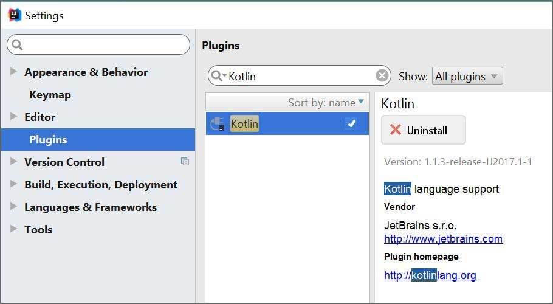
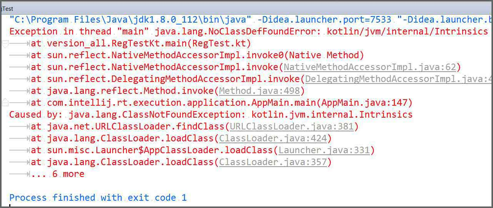
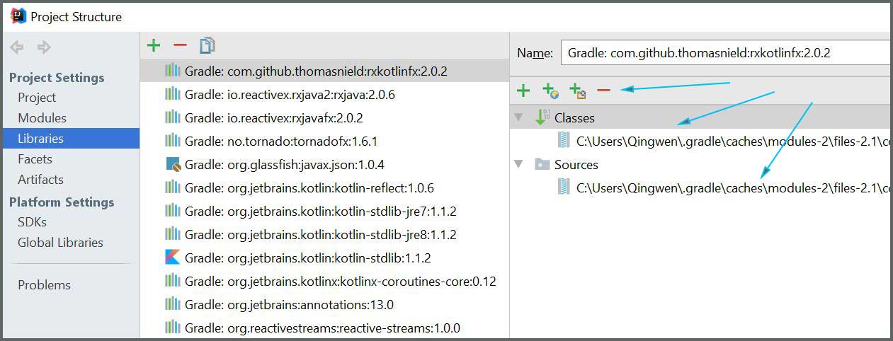
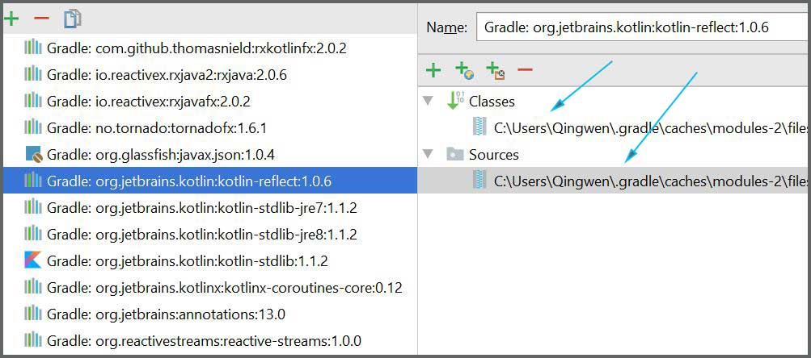
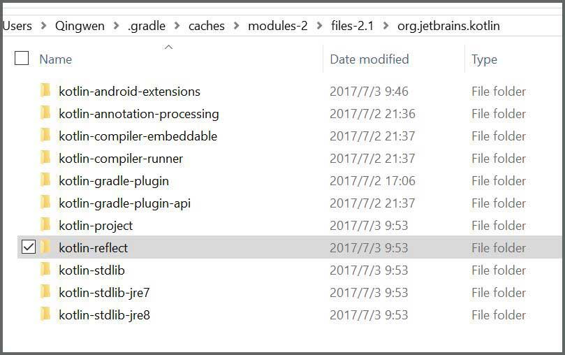

IDEA上使用Kotlin插件出现的几个小问题
一、前言
之前使用2016版本的 IntelliJ IDEA 写 Kotlin 程序，遇到网络不给力的时候偶尔会莫名其妙地出现 Kotlin 不能正常使用的问题，特别是 Kotlin 有新版本更新的时候，正犹豫要不要下载新版本，问题又出来了，于是乎下载安装了 2017.1.4 版本的 IDEA 。下载后直接安装，中途它会提示卸载旧版本，不用删除老版本的配置文件，这样安装好后注册激活信息和主题配置以及工程项目列表都保持原样。
使用新版本打开之前的 Gradle Kotlin 项目仍然遇到了一些问题，刚开始也不能正常运行，不过也不是什么大问题，自己 Google 搜索也就慢慢解决了，特此记录一下，以备下次查看。
二、问题解决
1. 新版本 Kotlin 插件安装
刚开始新版本是没有 Kotlin 插件配置的，但是很奇怪的是，打开 File->Settings->Plugins 搜索 Kotlin 显示 Kotlin 是安装好了的，就像下图：

这就是一个坑了，我知道 Kotlin 插件并没有安装，这是错误的显示，只要刷新或者重启，或者点击插件窗口下面的 Install JetBrains plugin... 按钮，可以看到可以继续搜索并正常安装 Kotlin 插件了。安装好重启一切正常！
2. Kotlin not configured 错误
新版本我使用了 4.0 版的 Gradle 构建工具，但是刷新后构建项目出现 Kotlin not configured 的错误，也没有任何按钮提示可以操作。在 StackOverflow 上搜到了这个 Bug 的解决方法： “Gradle project sync failed” & “Kotlin not configured” ：
1 | //implementation 'org.jetbrains.kotlin:kotlin-stdlib-jre8:$kotlin_version' |
就是把 build.gradle 文件的依赖文件中 jre8 部分删除并替换。然后 Gradle 重新刷新编译，就可以了。
3. 关于版本冲突警告
如果用过之前的 Kotlin 旧版本依赖，在新项目很容易出现下面的警告信息：
1 | Warning:Kotlin: The '-d' option with a directory destination is ignored because '-module' is specified |
这个警告信息不会影响程序的编译，如果要排除的话也很简单，按照警告提示直接删除 C:/Users/<your name>/.gradle/caches/modules-2/files-2.1/org.jetbrains.kotlin/kotlin-reflect/1.0. 这些类似的低版本文件夹，全部删除都没事，没有影响，删除继续刷新编译。
4. 旧版本编译错误 java.lang.NoClassDefFoundError
这个是旧版本的错误，其实在出现这个问题之前也遇到过一次同样的问题，自己按照相关信息解决了，不过这次新版本没有安装前出现的这个问题一直没有解决，直到重新安装了新版本。一部分错误错误信息：
1 | "C:\Program Files\Java\jdk1.8.0_112\bin\java" -Didea.launcher.port=7533 "-Didea.launcher.bin.path=D:\Software\Programme\IntelliJ IDEA 2016.3.4\bin" -Dfile.encoding=UTF-8 -classpath "C:\Program Files\Java\jdk1.8.0_112\jre\lib\charsets.jar;C:\Program Files\Java\jdk1.8.0_112\jre\lib\deploy.jar;C:\Program Files\Java\jdk1.8.0_112\jre\lib\ext\access-bridge-64.jar;C:\Program Files\Java\jdk1.8.0_112\jre\lib\ext\cldrdata.jar;C:\Program Files\Java\jdk1.8.0_112\jre\lib\ext\dnsns.jar;C:\Program Files\Java\jdk1.8.0_112\jre\lib\ext\jaccess.jar;C:\Program Files\Java\jdk1.8.0_112\jre\lib\ext\jfxrt.jar;C:\Program Files\Java\jdk1.8.0_112\jre\lib\ext\localedata.jar;C:\Program Files\Java\jdk1.8.0_112\jre\lib\ext\nashorn.jar;C:\Program Files\Java\jdk1.8.0_112\jre\lib\ext\sunec.jar;C:\Program Files\Java\jdk1.8.0_112\jre\lib\ext\sunjce_provider.jar;C:\Program Files\Java\jdk1.8.0_112\jre\lib\ext\sunmscapi.jar;C:\Program Files\Java\jdk1.8.0_112\jre\lib\ext\sunpkcs11.jar;C:\Program Files\Java\jdk1.8.0_112\jre\lib\ext\zipfs.jar;C:\Program Files\Java\jdk1.8.0_112\jre\lib\javaws.jar;C:\Program Files\Java\jdk1.8.0_112\jre\lib\jce.jar;C:\Program Files\Java\jdk1.8.0_112\jre\lib\jfr.jar;C:\Program Files\Java\jdk1.8.0_112\jre\lib\jfxswt.jar;C:\Program Files\Java\jdk1.8.0_112\jre\lib\jsse.jar;C:\Program Files\Java\jdk1.8.0_112\jre\lib\management-agent.jar;C:\Program Files\Java\jdk1.8.0_112\jre\lib\plugin.jar;C:\Program Files\Java\jdk1.8.0_112\jre\lib\resources.jar;C:\Program Files\Java\jdk1.8.0_112\jre\lib\rt.jar;D:\Documents\Workspace\IntelliJ IDEA\KotlinSamples\build\classes\java\main;D:\Software\Programme\IntelliJ IDEA 2016.3.4\lib\idea_rt.jar" com.intellij.rt.execution.application.AppMain version_all.RegTestKt |

之前的解决方案大概是这样，可以尝试，如图定位到 Project Structure 下，找到出问题的包：

然后删掉，或者替换成正确的包：

还不行就直接删掉对应文件夹下的文件：

以上方法不一定有效，不行再 Google 吧。 :joy:
三、总结
几个小坑，还算顺利。由于网络不是很稳定，用 Gradle 有时候真是一个痛苦。另外推荐 Kotlin 1.1.3 版本插件的最新几个小功能，比较酷：
- Semantic Highlighting
- Parameter Name Hints
- Type Hints
具体开启方法看官方文档： Kotlin 1.1.3 is out